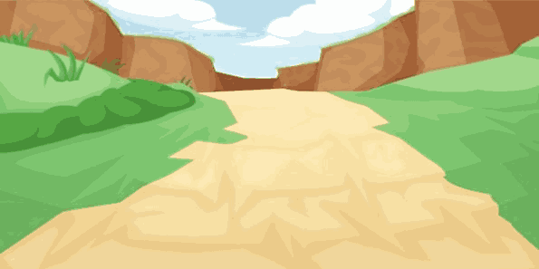
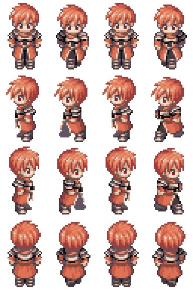

Sprite Sprite 是一種連續圖像的電腦圖學技術，它把畫面中需要以動畫來展現的物體，另外裁切一小張的圖像來繪製，完成後再貼到畫面上，這樣就不用對整張畫面做繪圖的動作，降低電腦的計算負擔，是一種高速繪圖的技巧。 本章節將介紹在 HTML5 的 Canvas 實作 Sprite 的方式，我們準備兩張圖，一張是背景：background.png，一張是動畫用的人物：sprite.png，以連續圖像的原理製作動畫。   準備好了的話，請按一下「開始展示範例」，檢視本章節所要示範的案例1…… 原始碼 //全域變數 let count=0; let position=0; //載入背景圖片 let background=new Image(); background.src='background.png'; //載入前景圖片 let sprite=new Image(); sprite.src='sprite.png'; //建立畫布 let canvas=document.createElement('canvas'); document.body.appendChild(canvas); //調整畫布大小 canvas.width=600; canvas.height=300; //先後將背景圖片與前景圖片描繪到畫布 function draw() { let context=canvas.getContext('2d'); context.drawImage(background,0,0); switch(count){ case 0: context.drawImage(sprite,0,0,96,141,272,position,96,141); count++; break; case 1: context.drawImage(sprite,96,0,96,141,272,position+=9,96,141); count++; break; case 2: context.drawImage(sprite,0,0,96,141,272,position,96,141); count++; break; case 3: count=0; context.drawImage(sprite,288,0,96,141,272,position+=9,96,141); } } //每 0.25 秒執行 draw() setInterval(draw,250); 範例下載 19690518A.7z